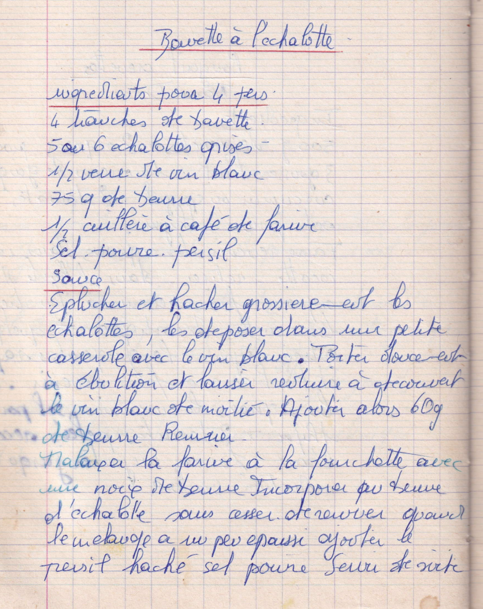

Bavette à l'échalotte

LISTE DES INGREDIENTS POUR 4 PERSONNES
- 4 tranches de bavette
- 5 ou 6 échalottes grises
- 1/2 verre de vin blanc
- 75gr de beurre
- 1/2 cuillère à café de farine
- Sel - Poivre - Persil
Sauce
- Eplucher et hacher grossièrement les échalottes
- les déposer dans une petite casserole avec le vin blanc
- Porter doucement à ébullition et laisser réduire à découvert le vin blanc de moitié
- Ajouter alors 60gr de beurre et remuer
- malaxer la farine à la fourchette avec une noix de beurre
- incorporer au beurre d'échalotte sans cesser de remuer
- Quand le mélange a un peu épaissi, ajouter le persil haché, sel, poivre
- Servir de suite